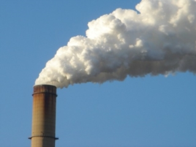

Ambiente

Adempimenti ambientali
Supporto per predisposizione e svolgimento pratiche tecnico-amministrative.
Misurazioni per la valutazione indoor del rischio radon ai sensi D.L. 241 del 2000
Sopralluoghi presso le attività /stabilimenti industriali e commerciali:
- Richiesta di Autorizzazione Integrata Ambientale (AIA) e autorizzazione generale di impianti e attività a ridotto impatto ambientale
- Registro di carico e scarico dei rifiuti e Modello Unico di Dichiarazione Ambientale(MUD)
- Domanda di autorizzazione agli scarichi
- Sopralluoghi preliminari per screening ambientale e successivi controlli
- Caratterizzazione dei rifiuti, valutazione del rischio, ammissibilità in discarica e supporto per una corretta gestione di depositi temporanei.
- Servizi di campionamento per parametri chimico-fisici e biologici, in particolare per:
- ARIA: particolato, particolato sospeso, pulviscolo atmosferico, polveri sottili, polveri totali sospese - PTS, microclima, emissioni convogliate e
diffuse, C.O.V. - Composti organici volatili; - ACQUA: acque superficiali, interne e sotterranee, acque reflue—trattate, da trattare, di prima pioggia, acque uso potabile, agricolo e industriale;
- SUOLO: prelievo campioni di suolo siti in bonifica, o siti inquinati in fase autorizzativa;